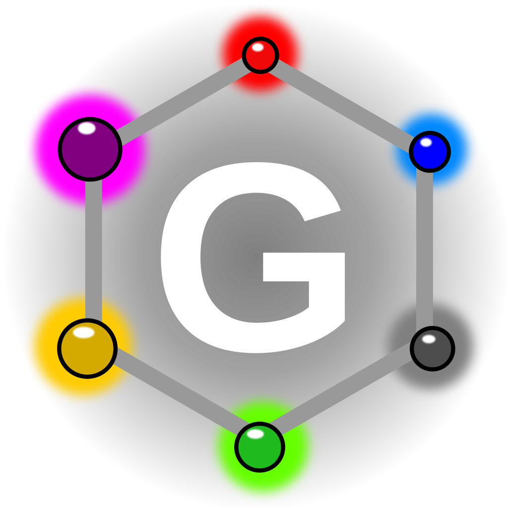
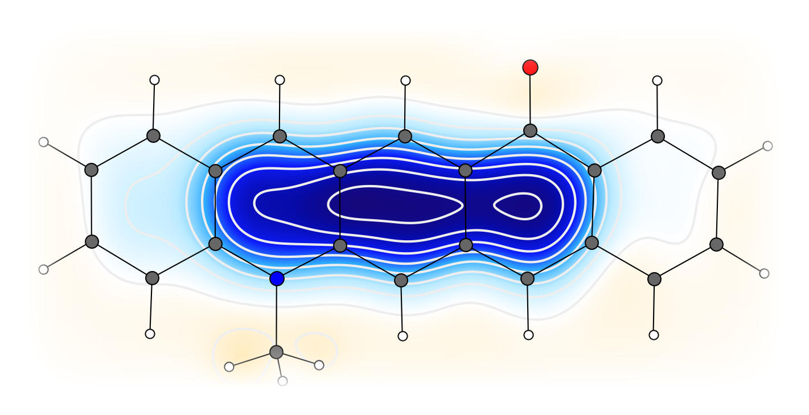
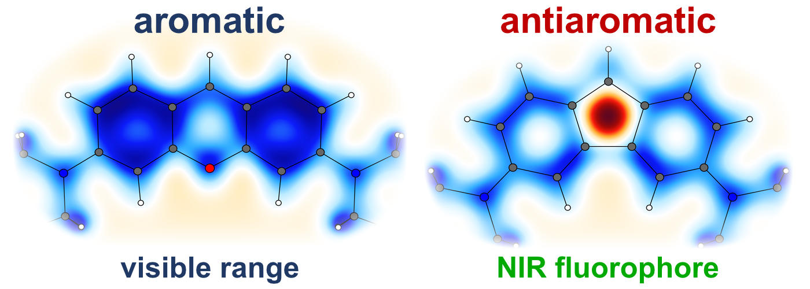
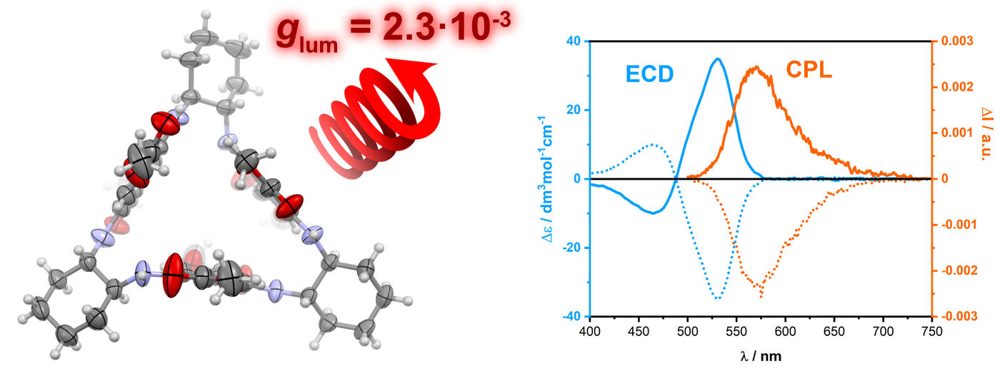
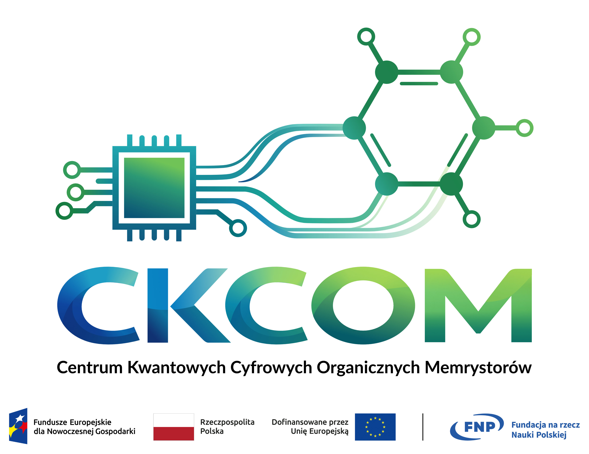

Research topics
We design acenes and other polycyclic π-systems in which main-group elements and donor–acceptor substitution control aromaticity, polarization, stability and optical properties.

Explore our researchWe develop compact fluorophores with strongly red-shifted absorption and emission, investigating how molecular architecture and (anti)aromaticity can extend xanthene- and acene-derived chromophores into the NIR.

Explore our researchWe construct shape-persistent fluorescent macrocycles whose topology and conformational organization produce unusual photophysical and chiroptical properties, including circularly polarized luminescence.

Explore our researchWithin the Center for Quantum Digital Organic Memristors, we design and synthesize switchable π-conjugated molecules for molecular-scale information storage and energy-efficient computing.

Visit the CKCOM website